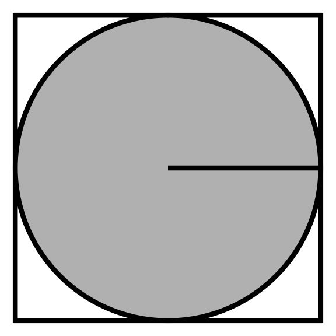
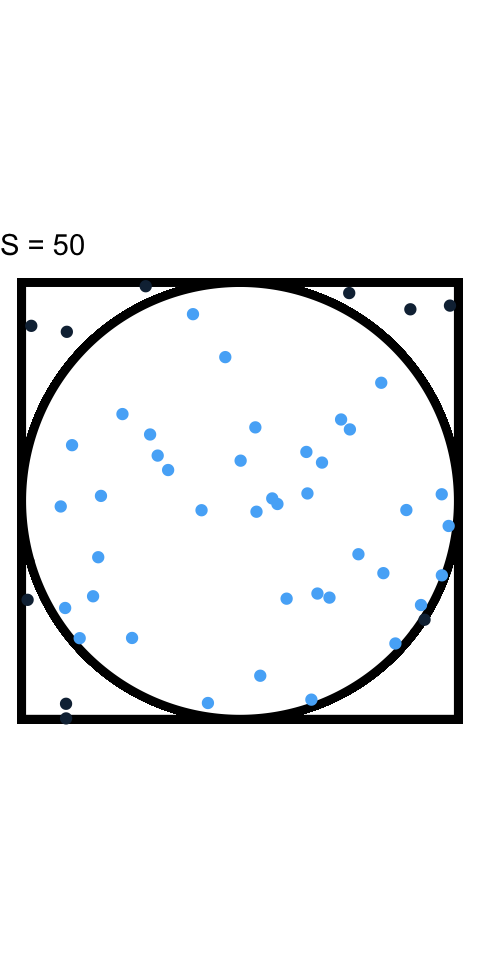
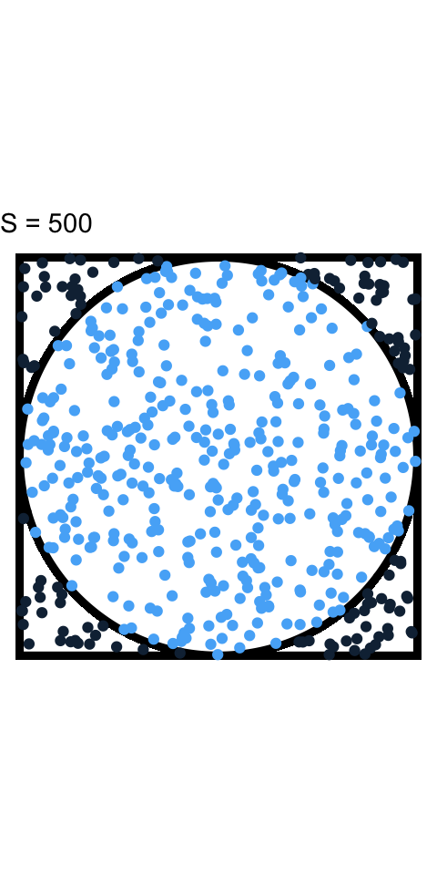
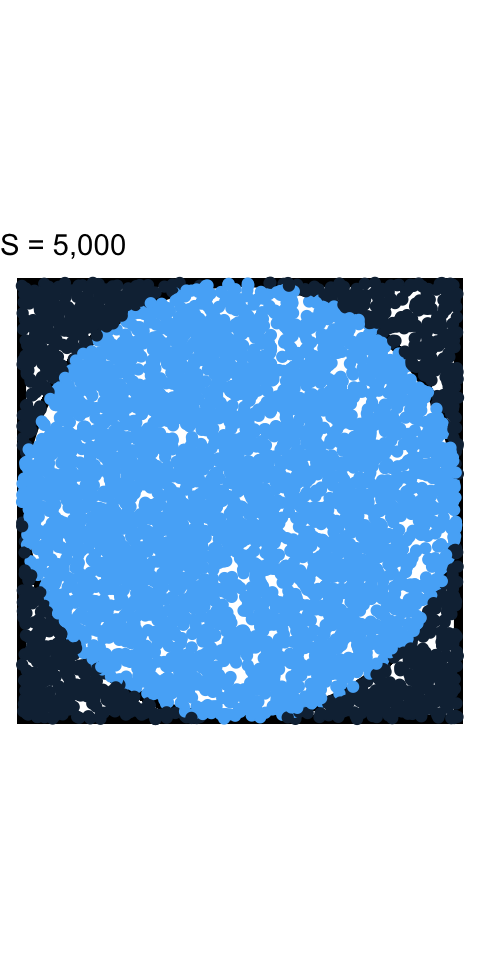
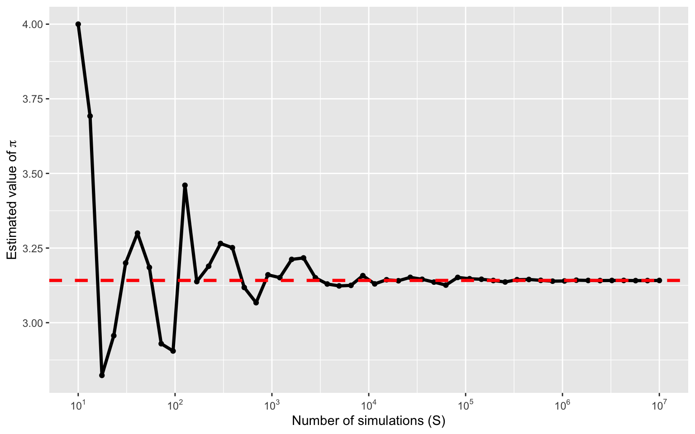
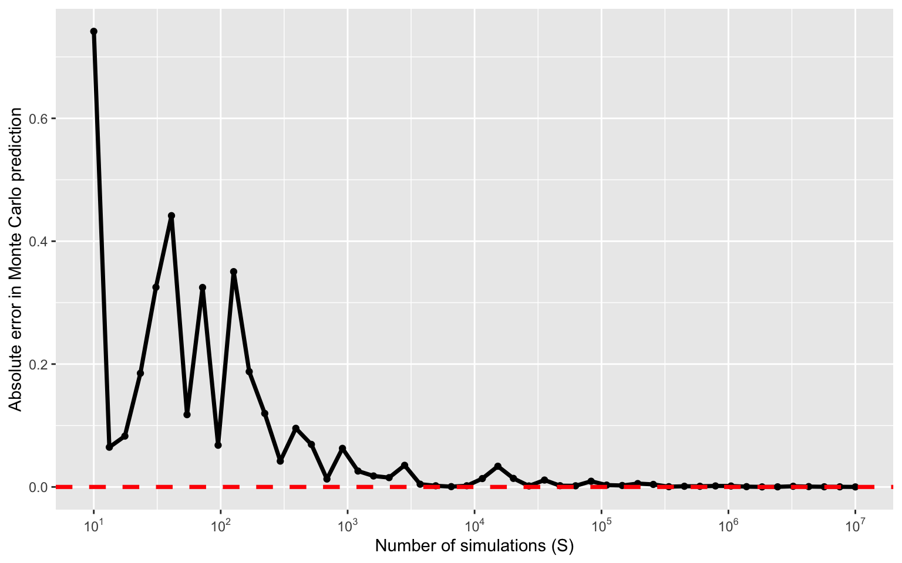
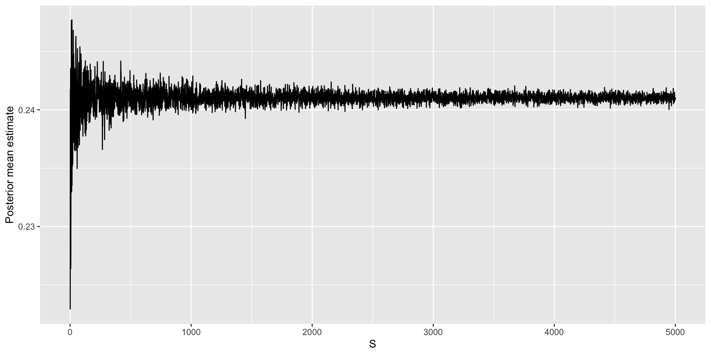

Monte Carlo Sampling
Jan 14, 2025
Agenda
Monte Carlo (MC) sampling
Bayesian inference using MC sampling
Monte Carlo Sampling
Simulating \(\pi\) using Monte Carlo
Suppose we are interested in estimating \(\pi\).
We can formulate \(\pi\) as a function of the area of a square and circle.
Area of a circle: \(A_c = \pi r^2\)
Area of a square: \(A_s = 4 r^2\)
The ratio of the two areas is: \(\frac{A_c}{A_s} = \frac{\pi r^2}{4 r^2} \implies \pi = \frac{4 A_c}{A_s}\)

- If we have an estimate for the ratio we can solve for \(\pi\). The challenge becomes estimating this ratio.
Monte Carlo sampling
We can take advantage of how quickly a computer can generate pseudo-random numbers.
There is a class of algorithms called Monte Carlo sampling that exploit randomness to estimate real world scenarios that would otherwise be difficult to explicitly calculate.
The name comes from the Monte Carlo Casino in Monaco, where the primary developer of the method, mathematician Stanislaw Ulam, was inspired by his uncle’s gambling habits. (This is who Stan was named after!)
Monte Carlo estimation of the ratio
We can use a Monte Carlo simulation to estimate the area ratio of the circle to the square.
Imagine you randomly drop grains of sand into the area of the square. By counting the total number of sand grains in the square (all of them since you’re an accurate dropper) to the number of sand grains inside the circle we get this estimate.
Multiply the estimated ratio by 4 and you get an estimate for \(\pi\).
The more grains of sand that are used the more accurate your estimate of \(\pi\).
Algorithm for estimating \(\pi\)
- Generate a random point \((x, y)\) inside a square centered at the origin with length 2.
This is equivalent to assuming:
\(f_{X,Y}(x,y) = f_X(x)f_Y(y)\)
\(f_X(x) = Uniform(-1, 1)\), \(f_Y(y) = Uniform(-1, 1)\)
- Determine whether the point falls inside the unit circle inscribed in the square by checking whether \(x^2 + y^2 \leq 1\).
- Repeat steps 1 and 2 for a large number of points (\(S\)).
Algorithm for estimating \(\pi\)
Generate a random point \((x, y)\) inside a square centered at the origin with length 2.
Determine whether the point falls inside the unit circle inscribed in the square by checking whether \(x^2 + y^2 \leq 1\).
Repeat steps 1 and 2 for a large number of points (\(S\)).
Calculate the ratio of the number of points that fell inside the circle to the total number of points generated.
- Multiply the ratio by 4 to estimate the value of \(\pi\).
How big of a difference does \(S\) make



Estimating \(\pi\) with increasing \(S\)

Error in estimating \(\pi\)

Intuition behing Monte Carlo sampling
Assume \(X \sim Uniform(-1,1)\) and \(Y \sim Uniform(-1,1)\).
We can write our problem as, \(\pi = 4P(X^2 + Y^2 \leq 1)\).
How could we do this without Monte Carlo?
Define, \(Z = X^2 + Y^2\). We could then use change-of-variables to compute the density of \(Z\) and then compute \(P(Z \leq 1)\).
- This is generally difficult!
Intuition behing Monte Carlo sampling
- Instead, we could write our problem as an expectation and use the law of large numbers,
\[P(X^2 + Y^2 \leq 1) = \mathbb{E}_{X,Y}\left[1\left(X^2 + Y^2 \leq 1\right)\right].\]
Recall: \(\mathbb{E}_X[1(A)] = \int_A f_X(x)dx = P(X \in A)\).
We then have that, \[\frac{1}{S}\sum_{i = 1}^S 1\left(X_i^2 + Y_i^2 \leq 1\right) \rightarrow \mathbb{E}_{X,Y}\left[1\left(X^2 + Y^2 \leq 1\right)\right],\]
where \((X_i,Y_i) \sim f(X,Y)\).
Bayesian inference using MC sampling
Computing a Bayesian posterior
Posterior inference using MC sampling
A motivating example
Suppose we are interested in estimating the prevalence of diabetes in Durham County. We aim to estimate this prevalence by taking a sample of \(n\) individuals in Durham County and we record whether or not they have diabetes, \(Y_i\).
We assume that \(Z = \sum_{i=1}^n Y_i \sim Binomial(n, \pi)\) for \(i = 1,\ldots,n\).
Our goal is to estimate \(\pi\) and perform statistical inference (e.g., point estimation, interval estimation, etc.).
Posterior inference
- In Bayesian statistics, inference is encoded through the posterior distribution,
\[\begin{aligned} f(\pi | Z) &= \frac{f(Z | \pi)f(\pi)}{f(Z)},\\ &= \frac{f(Z | \pi)f(\pi)}{\int f(Z | \pi)f(\pi)d\pi}. \end{aligned}\]
- All we have to do is specify the likelihood and prior.
Likelihood specification
\(Z\) is a Binomial distribution with pmf,
\[f(Z | \pi) = P(Z = z) = {n \choose z} \pi^z(1-\pi)^{n-z},\]
where \(z \in \{0, 1, \ldots, n\}\).
\({n \choose z} = \frac{n!}{z!(n-z)!} = \frac{\Gamma(n+1)}{\Gamma(z+1)\Gamma(n-z+1)}\)
\(\Gamma(x) = (x-1)!\)
Prior specification
What do we know about \(\pi\)?
\(\pi\) is continuous.
\(\pi \in (0,1)\).
We should place a distribution on \(\pi\) that permits these properties.
One option is the Beta distribution, \(\pi \sim Beta(\alpha,\beta)\), \[f(\pi) = \frac{\Gamma(\alpha)\Gamma(\beta)}{\Gamma(\alpha+\beta)}\pi^{\alpha-1}(1-\pi)^{\beta-1}.\]
Computing the marginal likelihood
Under our prior specification, we can compute the marginal likelihood, \(f(Z)\):
\[\begin{aligned} f(Z) &= \int f(Z | \pi) f(\pi) d\pi\\ &= \int {n \choose z} \pi^z(1-\pi)^{n-z} \frac{\Gamma(\alpha)\Gamma(\beta)}{\Gamma(\alpha+\beta)}\pi^{\alpha-1}(1-\pi)^{\beta-1} d\pi\\ &= {n \choose z}\frac{\Gamma(\alpha)\Gamma(\beta)}{\Gamma(\alpha+\beta)} \int \underbrace{\pi^{(\alpha + z) - 1}(1-\pi)^{(\beta + n - z) - 1}}_{Beta\text{ }kernel} d\pi \end{aligned}\]
Definition
The part of the pdf/pmf that depends on the variable is called the kernel.
Example: The kernel of the Beta pdf is \(\pi^{\alpha-1}(1-\pi)^{\beta-1}\)
Computing the marginal likelihood
Under our prior specification, we can compute the marginal likelihood, \(f(Z)\):
\[\begin{aligned} f(Z) &= {n \choose z}\frac{\Gamma(\alpha)\Gamma(\beta)}{\Gamma(\alpha+\beta)} \int \pi^{(\alpha + z) - 1}(1-\pi)^{(\beta + n - z) - 1} d\pi\\ &= {n \choose z}\frac{\Gamma(\alpha)\Gamma(\beta)}{\Gamma(\alpha+\beta)} \frac{\Gamma(\alpha+\beta + n)}{\Gamma(\alpha + z)\Gamma(\beta + n - z)}. \end{aligned}\]
We can then compute the posterior
\[\begin{aligned} f(\pi | Z) &= \frac{f(Z | \pi) f(\pi)}{f(Z)}\\ &= \frac{{n \choose z} \pi^z(1-\pi)^{n-z} \times \frac{\Gamma(\alpha)\Gamma(\beta)}{\Gamma(\alpha+\beta)}\pi^{\alpha-1}(1-\pi)^{\beta-1}}{{n \choose z}\frac{\Gamma(\alpha)\Gamma(\beta)}{\Gamma(\alpha+\beta)} \frac{\Gamma(\alpha+\beta) }{\Gamma(\alpha + z)\Gamma(\beta + n - z)}}\\ &=\frac{\Gamma(\alpha+z)\Gamma(\beta+n-z)}{\Gamma(\alpha + \beta + n)}\pi^{(\alpha + z) - 1} (1 - \pi)^{(\beta + n - z) - 1}\\ &=Beta\left(\alpha + z, \beta + n - z\right). \end{aligned}\]
A prior that is considered conjugate yields a posterior with the same distribution.
The Beta distribution is conjugate for the Bernoulli/Binomial distributions.
Computing the posterior
In general, computing the marginal likelihood, \(f(Z)\), is extremely difficulty.
An easier approach is to use the kernel trick.
\[\begin{aligned} f(\pi | Z) &\propto f(Z | \pi) f(\pi)\\ &\propto \pi^z (1-\pi)^{n - z} \pi^{\alpha-1}(1-\pi)^{\beta-1} \\ &= \pi^{\left(\alpha + z\right) - 1} (1-\pi)^{\left(\beta + n - z\right) - 1}\\ &= Beta\left(\alpha + z, \beta + n - z\right). \end{aligned}\]
- This only works when a conjugate prior is used.
Let’s inspect the posterior
Suppose we conducted a simple random sample of 500 individuals in Durham County and 120 responsed that they had diabetes and 380 that they did not.
The posterior becomes, \(Beta\left(\alpha + 120, \beta + 380\right)\).
We must choose our prior distribution wisely.
Note that:
\(\mathbb{E}[\pi] = \alpha/(\alpha + \beta)\)
\(\mathbb{V}(\pi) = (\alpha\beta)/[(\alpha + \beta)^2(\alpha + \beta + 1)]\).
Typically, \(\alpha = \beta = 1\), which corresponds to a uniform prior on \(\pi\).
Let’s inspect the posterior

Suppose my prior changes


Summarizing the posterior
We now have a posterior distribution. What do we do now?
- Posterior means, medians, modes, and variances
- Joint, conditional, and marginal probabilities, for example: \(P(\pi < c | Z)\)
- \(\alpha\)-quantiles: \(\{q_{\alpha} : P(\pi < q_{\alpha} | Z) = \alpha\}, \alpha \in (0,1)\)
- \(\ldots\)
How do we go about computing these summaries?
Summarization can be complex
Posteriors are often not available in closed form.
Even when we have a closed form posterior, it can be difficult to compute summaries of interest.
For example, consider \(P(\pi < c | Z)\). What are our options to calculate this probability?
Direct integration (by hand)
Numerical integration/software packages (e.g., \(\texttt{pbeta}\))
These methods work well for standard posterior quantities and distributions.
Summarizing the posterior
However, sometimes we will want to summarize other aspects of a posterior distribution.
\(P(\pi \in A| Z)\) for some arbitrary set \(A\)
Means and standard deviations of some function of \(\pi\), \(g\left(\pi\right)\)
The posterior distribution of functions of many parameters:
- \(|\pi_1 - \pi_2|\), \(\pi_1/\pi_2\), \(\max\left\{\pi_1,\ldots,\pi_p\right\}\), \(\dots\)
Obtaining exact values for these posterior quantities can be difficult or even impossible.
What are our options?
Monte Carlo sampling
Monte Carlo (MC) sampling
Integration method based on random sampling
The general principles and procedures remain relatively constant across a broad class of problems
Suppose we have \(S\) iid samples from our posterior distribution: \(\pi^{\left(1\right)},\ldots,\pi^{\left(S\right)}\stackrel{\text{iid}}{\sim}f\left(\pi|\mathbf{Y}\right)\)
Then the empirical distribution of \(\left\{\pi^{\left(1\right)},\ldots,\pi^{\left(S\right)}\right\}\) would approximate \(f\left(\pi|\mathbf{Y}\right)\), with the approximation improving as \(S\) increases
The empirical distribution of \(\left\{\pi^{\left(1\right)},\ldots,\pi^{\left(S\right)}\right\}\) is known as a MC approximation to \(f\left(\pi|\mathbf{Y}\right)\)
MC approximation
Let \(g\left(\pi\right)\) be (just about) any function of \(\pi\). The law of large numbers says that if,
\[\pi^{\left(1\right)},\ldots,\pi^{\left(S\right)}\stackrel{\text{iid}}{\sim}f\left(\pi|\mathbf{Y}\right),\] then, \[\frac{1}{S}\sum_{s=1}^S g\left(\pi^{\left(s\right)}\right)\rightarrow \mathbb{E}\left[g\left(\pi\right)|\mathbf{Y}\right]=\int g\left(\pi\right)f\left(\pi|\mathbf{Y}\right)d\pi,\] as \(S\rightarrow \infty\).
MC approximation
Implications (as \(S\rightarrow \infty\)):
\(\overline{\pi}=\frac{1}{S}\sum_{s=1}^S \pi^{\left(s\right)} \rightarrow \mathbb{E}\left[\pi|\mathbf{Y}\right]\)
\(\frac{1}{S-1}\sum_{s=1}^S \left(\pi^{\left(s\right)}-\overline{\pi}\right)^2 \rightarrow \mathbb{V}\left(\pi|\mathbf{Y}\right)\)
\(\frac{1}{S}\sum_{s=1}^S 1\left(\pi^{\left(s\right)}\leq \mathbf{c}\right) \rightarrow P\left(\pi\leq \mathbf{c} | \mathbf{Y}\right)\)
\(\alpha\)-quantile of \(\left\{\pi^{\left(1\right)},\ldots,\pi^{\left(S\right)}\right\}\rightarrow q_{\alpha}\)
Just about any aspect of the posterior distribution can be approximated arbitrarily exactly with a large enough MC sample
Posterior inference for arbitrary functions
Interest in the posterior distribution of a function of \(\pi\), \(g\left(\pi\right)\)
MC sampling plan:
Draw \(\pi^{\left(1\right)}\) from \(f\left(\pi|\mathbf{Y}\right)\), calculate \(g\left(\pi^{\left(1\right)}\right)\)
\(\ldots\)
Draw \(\pi^{\left(S\right)}\) from \(f\left(\pi|\mathbf{Y}\right)\), calculate \(g\left(\pi^{\left(S\right)}\right)\)
\(\Rightarrow g\left(\pi^{\left(1\right)}\right),\ldots,g\left(\pi^{\left(S\right)}\right)\stackrel{\text{iid}}{\sim}f\left(g\left(\pi\right)|\mathbf{Y}\right)\)
Therefore, similar quantities can be estimated (posterior mean, variance, quantiles, distribution, etc.)
How many samples to take?
We can use a central limit theorem: \(\sqrt{S}\left(\overline{\pi}-\mathbb{E}[\pi | \mathbf{Y}]\right)/\sigma \stackrel{d}{\rightarrow} \text{N}\left(0,1\right)\),
\(\overline{\pi}=\frac{1}{S}\sum_{s=1}^S \pi^{\left(s\right)}\)
\(\sigma^2 = \mathbb{V}\left(\overline{\pi}\right) = \frac{1}{S^2}\sum_{s=1}^S\mathbb{V}\left(\pi^{(s)}\right) = \frac{1}{S}\mathbb{V}\left(\pi | \mathbf{Y}\right)\).
\(\implies \overline{\pi}\approx N\left(\mathbb{E}[\pi | \mathbf{Y}],\sigma^2/S\right)\)
MC standard error: \(\sqrt{\frac{\widehat{\sigma}^2}{S}}\), \(\widehat{\sigma}^2=\frac{1}{S-1}\sum_{s=1}^S\left(\pi^{\left(s\right)}-\overline{\pi}\right)^2\)
Approximate 95% MC confidence interval for the posterior mean: \(\overline{\pi} \pm 2\sqrt{\frac{\widehat{\sigma}^2}{S}}\)
Choose \(S\) large enough to report the posterior mean with your desired precision
Reporting MC standard errors for the posterior mean is a good way to indicate that \(S\) is large enough
Returning to our posterior
Let’s obtain \(S = 1,000\) samples from our posterior.
We can compute the posterior mean and variance.
Assessing accuracy

Additional posterior summaries
Additional examples of MC sampling
Poisson random variable
Suppose that \(Y_i \stackrel{iid}{\sim} Poisson(\lambda)\) for \(i = 1,\ldots,n\). Assume the following conjugate prior, \(f(\lambda) \sim Gamma(a, b)\), so that \(f(\lambda|\mathbf{Y}) \sim Gamma(a + \sum_{i=1}^nY_i,b+n)\). We would like to perform inference for the \(\lambda\). We take \(S=10,000\) samples.
| min | q1 | median | q3 | max | mean | sd |
|---|---|---|---|---|---|---|
| 3.269 | 3.904 | 4.039 | 4.173 | 4.773 | 4.041 | 0.201 |
Sampling for any distribution
Monte Carlo sampling does not have to be used solely for posterior inference. Suppose we are interested in computed summaries for \(X_i \stackrel{iid}{\sim} N(3, 4)\) for \(i = 1,\ldots,n\). We take \(S = 10,000\).
Combination of random variables
Suppose \(X_i \stackrel{iid}{\sim} N(3, 4)\) and \(Y_i \stackrel{iid}{\sim} \chi^2(df=3)\) for \(i = 1,\ldots,n\). \(X_i\) and \(Y_i\) are independent. We are interested in summaries of \(Z_i = X_i / Y_i\). We take \(S = 10,000\).
Prepare for next class
Complete HW 00 which is due before Thursday’s class
Complete reading to prepare for Thursday’s lecture
Thursday’s lecture: Markov chain Monte Carlo